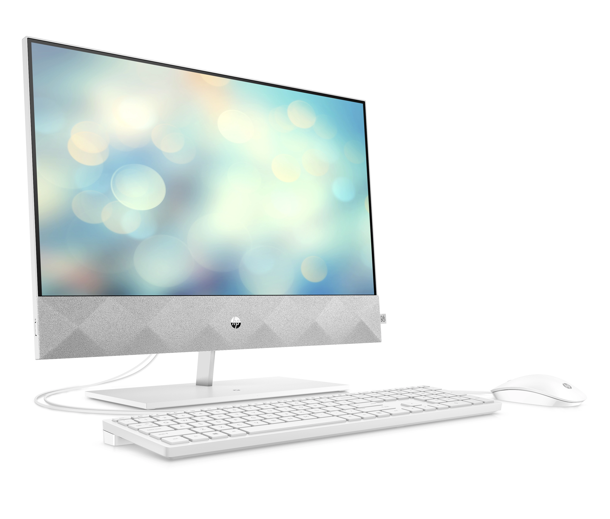

Napster allowed people to share their songs with others, meaning people that had an MP3, and typed in their song, they were able to download and listen to their music.
The second section of quest encourages one to envision a world without Google in which our states of wellbeing cannot go back blind or inquire. The video says, "There was no Google just 10 years ago and no way to search the internet 5 years ago."
Mostly Yahoo oriented! The documentary Excite and Google brings viewers on a Silicon Valley ride to illustrate how a start up business is having the funding to make the concept a possibility.
It is an insightful and interesting documentary. It implies the audience has no understanding of the internet past and breaks all down. It's a perfect film for anyone who is interested in science, history, pop culture or the world around us.
The story is about how a fresh and innovative way to find information/search revolutionized the Web in the brief amount of time following the inception of the Internet. Prior to 1995, search engines used textual keyword indexes to locate the right matches.
Whenever a users type a search term, they will equate the search term to their term databases through search engines like AltaVista and Lycos. The pages with text similar to the search word were found to be more important and were mentioned above.
This was not always successful and has enhanced search engines, i.e. In 1994 and 1998, Yahoo and Google were both identified. See the video and the increase of such search engines for further perspective. Basically, in a few short years, the web was revolutionized as a fresh and exciting way to get knowledge. In the meantime, Google has become one of America's leading corporations.

The founder of Amazon, Jeff Bezos first began in Wall Street, and during this time he was working on spreadsheets. While doing this he began to list out of stuff that he could list on the internet that people would want to buy. The first thing that he found out was books. It was not possible to sell millions of books in a store
The dot-com bubble is a historical economic bubble that was an age of intensive speculations in the US particularly between 1995 and 2000, known as the dot-com crash, the software bubble and the internet bubble.
David Weekley was able to launch a MP3 information website, and just after 2 weeks, he was using about 85% of Stanford’s bandwidth. As more and more people were starting to share their music online without consideration of copyrights, the founder of Napster.
Local area networks started popping up, the Internet start becoming a day to day use and a mandatory thing.